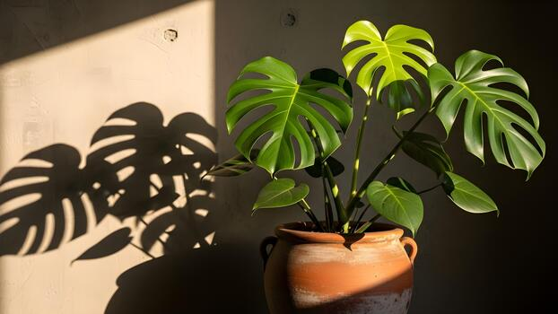

Monstera skvostná (Monstera deliciosa) je rostlina která roste v pralese, obrovské děravé listy zná každý.
Alocasia macrorrhizos, Mohutný druh Alocasia macrorrhizos je v tropech pěstován pro škrobnaté oddenky. Některé druhy s ozdobnými listy jsou pěstovány jako tropické okrasné rostliny, zejména kultivar Alocasia 'Amazonica', který je nabízen i jako pokojová rostlina
Pothos repens je oblíbená popínavá pokojová rostlina z čeledi árónovitých, původem z deštných pralesů jihovýchodní Asie.
